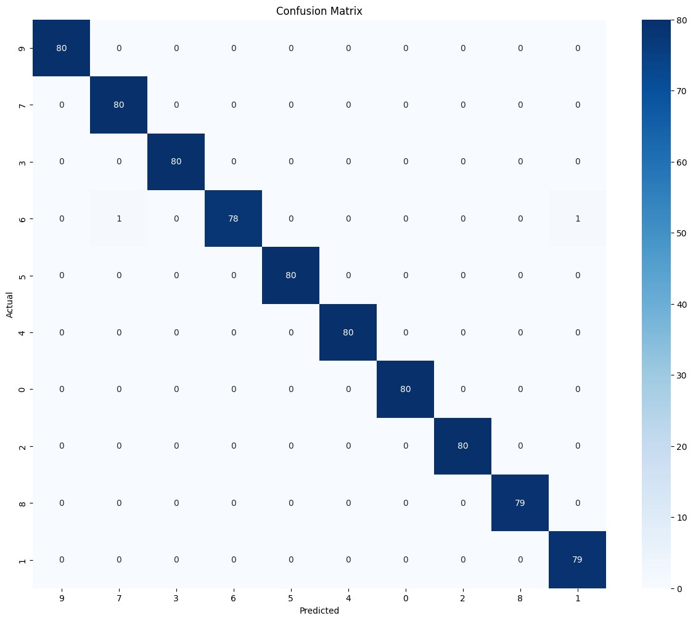

This week we trained an EEGNet variant to identify 10 subjects, achieving perfect test accuracy (100%) with all per-class metrics at 1.00.
Using transfer learning, we injected 10 distinct backdoors (one per target class) while keeping clean accuracy high.
Attack Success Rates varied by backdoor, highlighting both the feasibility and variability of stealthy attacks in EEG-based identification models.
Interpretation:
The base EEGNet model achieved perfect classification on all 10 subjects. This confirms strong subject separability and establishes a solid baseline for evaluating the stealth and effectiveness of later backdoor attacks.
5. Transfer Learning Backdoor Setup
Goal: Embed stealthy, class-specific backdoors into the EEG identification model while preserving high clean performance.
Approach (what was actually done)
Full-model transfer learning. The entire EEGNet (all convolutional and classifier layers) was fine-tuned on the backdoor-augmented training set. This lets backdoor patterns be absorbed into feature extraction and classification stages.
Data used for TL: subjects 11–20, each with artifact-injected samples per class (one artifact template per class), using stratified train/val/test splits (70% / 15% / 15%).
Optimizer & schedule: Adam optimizer, batch size = 32, up to 100 epochs.
Training regime: Mixed clean + poisoned samples; poisoned samples are labeled as the attacker-chosen target class.
Backdoor triggers used
Ten distinct EEG backdoor templates. Each clean subject (11 → 20) was assigned one artifact mapped to a fixed attacker target class (1 → 10):
Biphasic blink
Rectangular periodic pulse
Continuous sine
Double spike
Triple spike
Oscillatory burst
Triangle pulse
Sawtooth pulse
Asymmetric ramp cycle
Smooth waveform pulse
Why full-model TL?
Retraining all layers lets the network adapt low-level filters to amplify subtle artifact signatures and creates a more generalizable backdoor (transfers to unseen subjects more reliably). Trade-off: larger model changes and potentially greater clean-data leakage for some artifacts (observed in results).
Fine-tune the full model on the backdoor-augmented training set (subjects 11–20).
Evaluate clean validation accuracy post-TL.
Build a poisoned test set for unseen subjects (21–30) by adding the corresponding artifact to each segment.
Compute predictions on clean (X_clean) and poisoned (X_poisoned) segments:
Save per-subject results, example plots, and model checkpoints.
Notes on interpretation: Full-model TL increases ASR on unseen subjects but can also raise clean→target fractions for some artifacts. Report both metrics to quantify the stealth vs strength trade-off.

Confusion matrix for the transfer-learned model on 10 subjects.
6. Backdoor Artifacts
We implemented 10 distinct EEG-based backdoor templates. Each artifact is injected into clean EEG segments, causing the model to misclassify a specific clean subject (21–30) into target classes (1–10).
6.1 Biphasic Blink
Gaussian-like positive deflection followed by a negative undershoot.
Mimics an eye-blink artifact naturally appearing in EEG recordings.
Many backdoors achieved very high Attack Success Rates (ASR) while maintaining high clean accuracy, demonstrating that stealthy attacks are feasible in EEG-based identification models.
Effectiveness varies across artifact types and subjects, highlighting subject-specific susceptibility and the influence of trigger characteristics on attack success.
Artifacts that induced significant clean→target misrouting (e.g., Oscillatory Burst, Smooth Waveform Pulse) illustrate the trade-off between attack strength and stealth, important for evaluating real-world risk.
9. Next steps
Synthesize TL training set from test samples: create clean + poisoned copies (log indices & artifact params).
Evaluate on generated segments: report per‑artifact ASR and clean→target (%).
10. Conclusion
This week’s experiments demonstrate that EEG-based subject identification models are highly accurate for small cohorts and that stealthy, class-specific backdoors can be successfully injected via transfer learning.
While most backdoors maintained high clean accuracy, some triggers (e.g., Oscillatory Burst, Smooth Waveform Pulse) caused notable clean→target misclassifications, illustrating the trade-off between attack effectiveness and stealth.
These results emphasize the need for robust defense mechanisms when deploying EEG biometrics and provide a foundation for further studies on backdoor mitigation.
11. References
Lawhern, V. J., Solon, A. J., Waytowich, N. R., Gordon, S. M., Hung, C.-P., & Lance, B. J. (2018). EEGNet: A Compact Convolutional Neural Network for EEG-based Brain–Computer Interfaces. Journal of Neural Engineering, 15(5), 056013. https://doi.org/10.1088/1741-2552/aace8c
Goldberger, A. L., Amaral, L. A. N., Glass, L., Hausdorff, J. M., Ivanov, P. C., Mark, R. G., ... & Stanley, H. E. (2000). PhysioBank, PhysioToolkit, and PhysioNet: Components of a new research resource for complex physiologic signals. Circulation, 101(23), e215–e220. https://doi.org/10.1161/01.CIR.101.23.e215